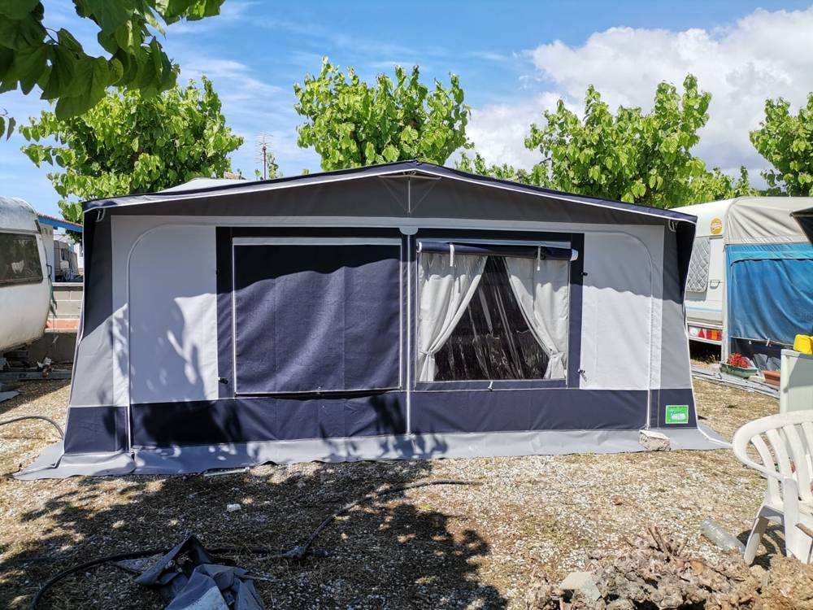
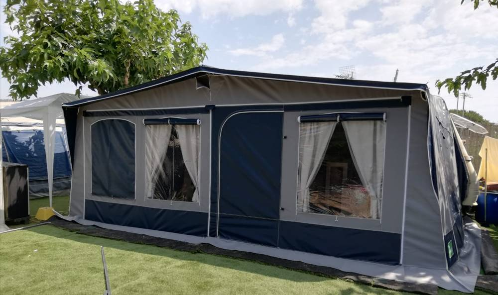
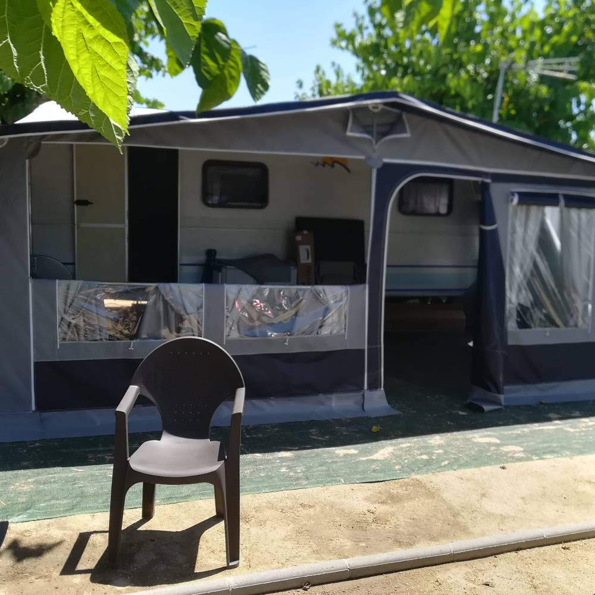
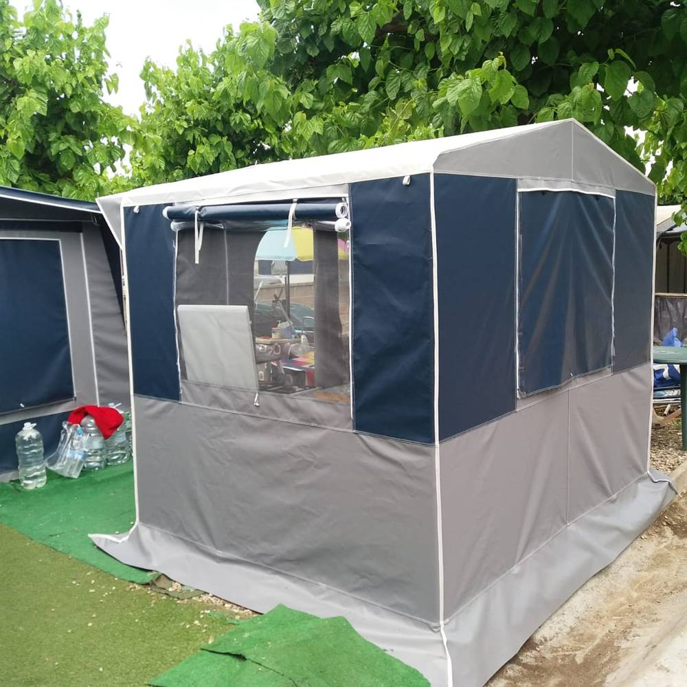
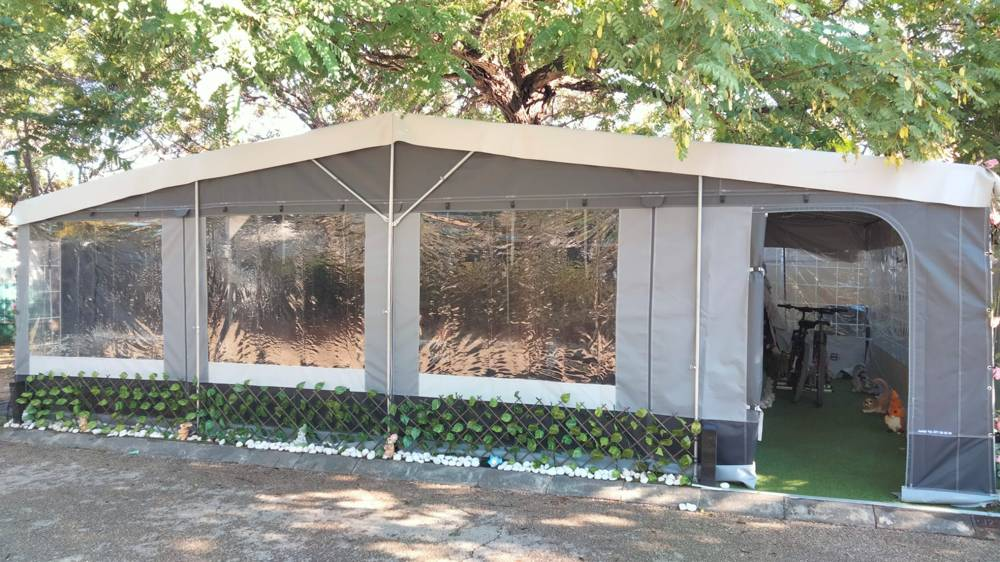
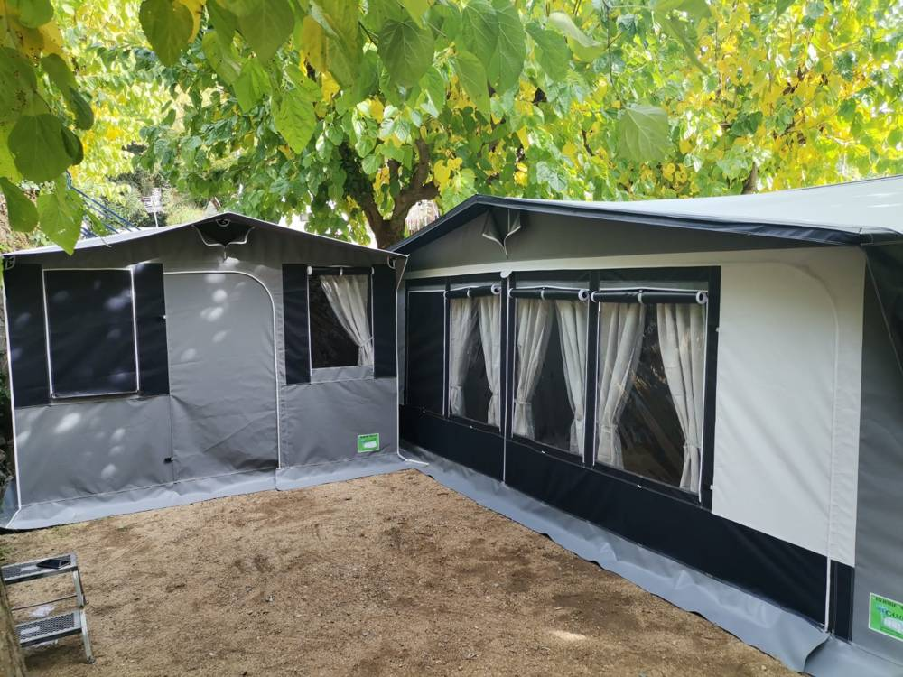
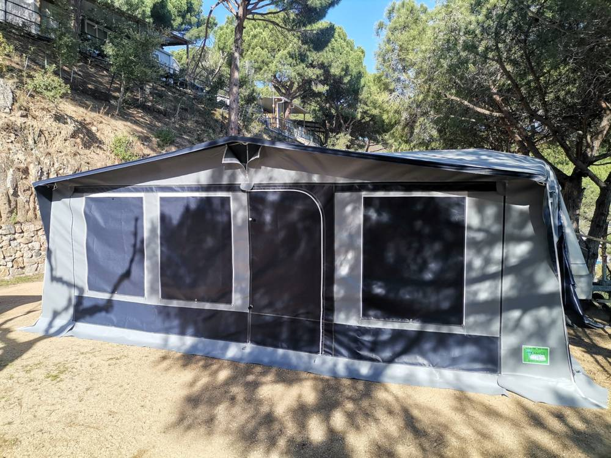

Avancé SCAR
Todas las ventanas protegidas con tapas. El frontal lleva dos puertas desmontables que pueden convertirse en balconera, y las ventanas laterales tienen mosquitera y puertas.
Avancés de alta calidad y al mejor precio · Barcelona
Somos especialistas en la fabricación de avancés, sobreavances y cocinas para caravana. En PVC Trevira y con armazón de acero galvanizado de 25 mm, a la medida de tu caravana. Responsabilidad y puntualidad en la entrega y el montaje.


Todas las ventanas protegidas con tapas. El frontal lleva dos puertas desmontables que pueden convertirse en balconera, y las ventanas laterales tienen mosquitera y puertas.

Una puerta en el frontal totalmente desmontable que se convierte en balconera. Ventanas protegidas con tapas y laterales desmontables con ventanas con mosquitera.

Ventanas protegidas con cristal y tapas enrollables. Los laterales y la trasera, con mosquitera.
Todos se fabrican en PVC Trevira, fácil de limpiar, con armazón de acero galvanizado de 25 mm, y se adaptan a cualquier medida de caravana. También hacemos sobreavances.



13 opiniones de clientes en Facebook, Google y nuestra web.
A nosotros nos pusieron en nuestra caravana y quedó genial, muy profesionales y puntuales con la fecha prevista. Los recomiendo al 100%
Buen material, personal puntual en la entrega y muy agradables, he quedado encantada. PERFECTO TODO, 😍
Son super profesionales y ponen avances con muy buena calidad y a muy buen precio. Si tuviera que poner otro avance sin duda me lo pondrían ellos.
Anteriormente mande a hacer uno con otra empresa y tuve una mala experiecia, pero me recomendaron esta y debo decir que la atencion y la predisposicion de Avances Campus fue muy buena, me montaron la tienda y la cocina muy recomendable.
He comprado tienda cocina y te la fabrican como tu quieras. Me la trajeron y montaron ellos.Todo correcto
Fantasticos, todo perfecto!!! me lo montaron en tiempo Ademas súper bien de precio, se lo recomiendo a todo el mundo
Hola soy Miguel un chico que encargo un abance. Son súper profesionales he quedado súper contento por quedar espectacular al montarlo le recomiendo al 100% muchas gracias.
Trabajo excelente, calidad y puntualidad. Sigan así, los recomiendo
Todo muy profesional, chicos muy responsables y amables, volvere a encargar otro trabajo con ellos.
Estoy super emocionada con mi nuevo avance ya me hacia falta un cambio. Gracias por la puntualidad y la seriedad con la que trabajan.
Todo muy bien, buen trabajo y muy contento con el servicio. Muchas gracias.
Muy contento con el trabajo realizado, el material es muy bueno y sobre todo los jovenes muy majos.
Son muy profesionales. Un 10👍
Es la tienda de lona que se monta pegada al lateral de la caravana y se engancha a su carril. Amplía el espacio para comer, guardar cosas o estar a la sombra. Avancés Campus los fabrica a la medida de cada caravana.
Sí. Todos los avancés se adaptan a cualquier medida de caravana. Si no sabes la medida del carril, la tomamos nosotros.
De PVC Trevira, que se limpia fácilmente, con armazón de acero galvanizado de 25 mm.
El Avancé SCAR, con dos puertas frontales desmontables; el Avancé CAMPUS, con el frontal que se quita entero y queda como un balcón; cocinas para camping con ventanas de cristal; y sobreavances.
Sí. Te lo llevamos y te lo montamos en tu camping, con responsabilidad y puntualidad.
En Barcelona y alrededores. Muchos de nuestros clientes tienen la caravana en campings de la costa catalana. Pregúntanos por tu camping.
Rellena el presupuesto de esta web en 2 minutos o escríbenos por WhatsApp al 632 083 624. Te contestamos por WhatsApp.
Estaremos encantados de atenderte. Si tienes dudas o necesitas un presupuesto, responde unas preguntas sobre tu caravana y te contestamos por WhatsApp.
Empezar el presupuesto